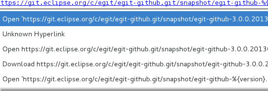

Improved hyperlinking
Hyperlink options (shown by Ctrl + hovering over certain .spec file elements, such as URLs) have been cleaned up.
In addition, improvements have been made to accomodate proper use of URLs in SOURCE and PATCH defines.
For more information on how to use the Specfile Editor, see the User Guide.

Before Options Cleanup

After Options Cleanup

New RPM Menu and Toolbar
RPM has improved its menu to be more easily navigatable and to also give the user the option to build RPMs. A user can now use the menu's build commands as opposed to having to go through the export wizard (now deprecated) to build the RPMs.
In addition, a toolbar has been added to give the user easy access to the build commands without having to go through the context menu.